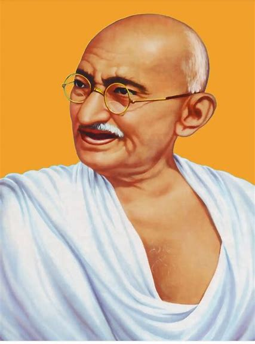

Mahatma Gandhi
Mohandas Karamchand Gandhi (2 October 1869 – 30 January 1948) was an Indian lawyer, anti-colonial nationalist and political ethicist who employed nonviolent resistance to lead the successful campaign for India's independence from British rule. He inspired movements for civil rights and freedom across the world. The honorific Mahātmā (from Sanskrit 'great-souled, venerable'), first applied to him in South Africa in 1914, is now used throughout the world. Read more...